import matplotlib.pyplot as plt
import seaborn as from django.conf import settings
sns.countplot(x='how_masculine',
data=maculinity_data)
plt.show()Visualizar una variable categórica y una cuantitativa
Las variables categóricas están presentes en casi todos los conjuntos de datos, pero destacan especialmente en los datos de encuestas. En este capítulo aprenderás a crear y personalizar gráficos categóricos, como gráficos de caja, gráficos de barras, gráficos de recuentro y gráficos de puntos. Por el camino, explorarás datos de encuestas a jóvenes sobre sus intereses, a estudiantes sobre sus hábitos de estudio y a hombres adultos sobre sus sentimientos acerca de la masculinidad.
Gráficos de recuento y de barras.
Gráficos categóricos
- Ejemplos: Gráficos de recuento y de barras
- Incluyen variables categóricas.
- Comparaciones entre grupos
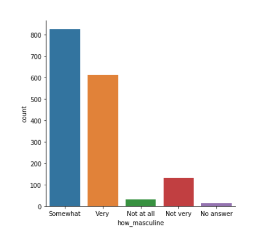
catplot()
- Usado para crear gráficos categóricos
- Tiene las mismas ventajas de
relplot() - Se pueden crear facilmente subgráficos con
col=yrow=
countplot() vs. catplot()
import matplotlib.pyplot as plt
import seaborn as sns
sns.catplot(x='how_masculine',
data=masculinity_data,
kind='count')
plt.show()- Cambiando el orden
import matplotlib.pyplot as plt
import seaborn as sns
category_order=['No answer',
'Not at all',
'Not very',
'Somewhat',
'Very']
sns.catplot(x='how_masculine',
data=masculinity_data,
kind='count',
order=category_order)
plt.show()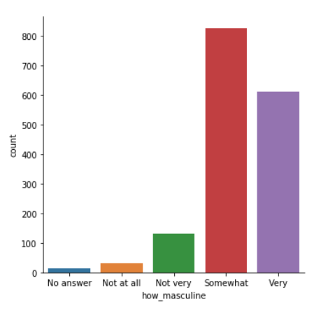
Gráfico de barras
- Muestran la media de una variable cuantitativa por categoría
import matplotlib.pyplot as plt
import seaborn as sns
sns.catplot(x='day', y='total_bill',
data=tips,
kind='bar')
plt.show()
Intervalos de confianza
- Las líneas muestran los intervalos de confianza del 95% para la media.
- Muestran el nivel de incertidumbre sobre las estimaciones.
- Asumiendo que nuestros datos sean una muestra aleatoria.
Desactivando los intervalos de confianza
import matplotlib.plyplot as plt
import seaborn as sns
sns.catplot(x='day', y='total_bill',
data=tips,
kind='bar',
ci=None)
plt.show()
- Cambiando la orientación de las barras
import matplotlib.pyplot as plt
import seaborn as sns
sns.catplot(x='total_bill', y='day',
data=tips,
kind='bar')
Es común poner la variable categórica en el eje x
Gráficos de recuento
En este ejercicio, volveremos a explorar nuestro conjunto de datos que contiene las respuestas a una encuesta enviada a los jóvenes. Podríamos sospechar que los jóvenes pasan mucho tiempo en internet, pero ¿Cuánto declaran utilizar internet al día? Utilicemos un gráfico de recunto para desglosar el número de respuestas de la encuesta en cada categoría y luego exploremos si cambia en función de la edad.
Como recordatorio, para crear un gráfico de recuento, utilizaremos la función catplot() y especificaremos el nombre de la variable categórica a contar (x=____), el DataFrame de pandas a utilizar (data=____), y el tipo de gráfico (kind="count").
import pandas as pd
import matplotlib.pyplot as plt
import seaborn as sns
plt.rcParams['figure.figsize'] = (10, 5)
ruta = './data/young-people-survey-responses.csv'
survey_data = pd.read_csv(ruta, index_col=0)
survey_data.head()| Music | Techno | Movies | History | Mathematics | Pets | Spiders | Loneliness | Parents' advice | Internet usage | Finances | Age | Siblings | Gender | Village - town | Age Category | Interested in Math | |
|---|---|---|---|---|---|---|---|---|---|---|---|---|---|---|---|---|---|
| 0 | 5.0 | 1.0 | 5.0 | 1.0 | 3.0 | 4.0 | 1.0 | 3.0 | 4.0 | few hours a day | 3.0 | 20.0 | 1.0 | female | village | Less than 21 | False |
| 1 | 4.0 | 1.0 | 5.0 | 1.0 | 5.0 | 5.0 | 1.0 | 2.0 | 2.0 | few hours a day | 3.0 | 19.0 | 2.0 | female | city | Less than 21 | True |
| 2 | 5.0 | 1.0 | 5.0 | 1.0 | 5.0 | 5.0 | 1.0 | 5.0 | 3.0 | few hours a day | 2.0 | 20.0 | 2.0 | female | city | Less than 21 | True |
| 3 | 5.0 | 2.0 | 5.0 | 4.0 | 4.0 | 1.0 | 5.0 | 5.0 | 2.0 | most of the day | 2.0 | 22.0 | 1.0 | female | city | 21+ | True |
| 4 | 5.0 | 2.0 | 5.0 | 3.0 | 2.0 | 1.0 | 1.0 | 3.0 | 3.0 | few hours a day | 4.0 | 20.0 | 1.0 | female | village | Less than 21 | False |
Instrucciones
- Utiliza
sns.catplot()para crear un gráfico de recuento utilizando el DataFramesurvery_datacon"Internet usage"en el eje x.
# Create count plot of internet usage
sns.catplot(x='Internet usage',
data=survey_data,
kind='count')
# Show plot
plt.show()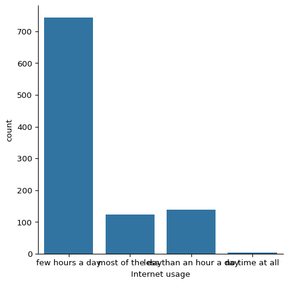
- Haz que las barras sean horizontales en lugar de verticales
# Change the orientation of the plot
sns.catplot(y='Internet usage',
data=survey_data,
kind='count')
# Show plot
plt.show()
- Separa este gráfico en dos subtramas de columnas contiguas en función de
"Age Category", que separa a los encuestados en menores de 21 años y mayores de 21 años. A partir de 21 años.
# Separate ubti cikynb subplots based on age category
sns.catplot(y='Internet usage',
data=survey_data,
kind='count',
col='Age Category')
# Show plot
plt.show()
Parece que la mayoría de los jóvenes usan internet durante pocas horas todos los días, independientemente de su edad.
Diagramas de barras con porcentajes
Sigamos explorando las respuestas a una encuesta enviada a los jóvenes. La variable "Interested in Math" es True si la persona declaró estar interesada o muy interesada en las matemáticas, y False en caso contrario. ¿Qué porcentaje de jóvenes afirma estar interesado en las matemáticas, y varía esto en función del género? Utilicemos un diagrama de barras para averiguarlo.
Como recordatorio, crearemos un gráfico de barras utilizando la función catplot(), proporcionando el nombre de la varible categórica a poner en el eje x (x=____), el nombre de la variable cuantitativa a resumir en el eje y (y=____), el DataFrame de pandas a utilizar (data=____), y el tipo de gráfico categórico (kind="bar").
Instrucciones
- Utiliza el DataFrame
survey_dataysns.catplot()para crear un gráfico de barras con"Gender"en el eje x y"Interested in Math"en el eje y.
import matplotlib.pyplot as plt
import seaborn as sns
# Create a bar plot of interest in math, separated by gender
sns.catplot(x='Gender', y='Interested in Math',
data=survey_data,
kind='bar')
# Show plot
plt.show()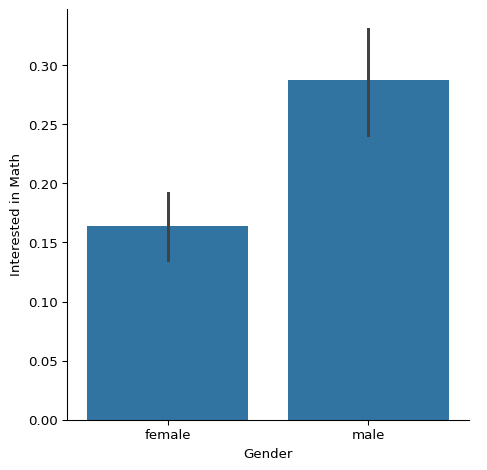
Cuando la variable y es Verdadero/Falso, los gráficos de barras mostrarán el porcentaje de respuestas que informan Verdadero. Este gráfico nos muestra que los hombres informan un interés mucho mayor en las matemáticas en comparación con las mujeres.
Personalizar gráficos de barras
En este ejercicio, exploraremos datos de alumnos de secundaria. La variable "study_time" registra el tiempo de estudio semanal declarado por cada estudiante como una de las siguientes categorías: "<2 hours", "2 to 5 hours", "5 to 10 hours", o ">10 hours". ¿Los alumnos que declaran estudiar más tienden a obtener mejores notas finales Comparemos la nota media final entre los alumnos de cada categoría mediante un diagrama de barras.
import pandas as pd
import matplotlib.pyplot as plt
import seaborn as sns
ruta = './data/student-alcohol-consumption.csv'
student_data = pd.read_csv(ruta, index_col=0)
student_data.head()| school | sex | age | famsize | Pstatus | Medu | Fedu | traveltime | failures | schoolsup | ... | goout | Dalc | Walc | health | absences | G1 | G2 | G3 | location | study_time | |
|---|---|---|---|---|---|---|---|---|---|---|---|---|---|---|---|---|---|---|---|---|---|
| 0 | GP | F | 18 | GT3 | A | 4 | 4 | 2 | 0 | yes | ... | 4 | 1 | 1 | 3 | 6 | 5 | 6 | 6 | Urban | 2 to 5 hours |
| 1 | GP | F | 17 | GT3 | T | 1 | 1 | 1 | 0 | no | ... | 3 | 1 | 1 | 3 | 4 | 5 | 5 | 6 | Urban | 2 to 5 hours |
| 2 | GP | F | 15 | LE3 | T | 1 | 1 | 1 | 3 | yes | ... | 2 | 2 | 3 | 3 | 10 | 7 | 8 | 10 | Urban | 2 to 5 hours |
| 3 | GP | F | 15 | GT3 | T | 4 | 2 | 1 | 0 | no | ... | 2 | 1 | 1 | 5 | 2 | 15 | 14 | 15 | Urban | 5 to 10 hours |
| 4 | GP | F | 16 | GT3 | T | 3 | 3 | 1 | 0 | no | ... | 2 | 1 | 2 | 5 | 4 | 6 | 10 | 10 | Urban | 2 to 5 hours |
5 rows × 29 columns
Instrucciones
- Utiliza
sns.catplot()para crear un gráfico de barras con"study_time"en el eje x y la calificación final ("G3") en el eje y, utilizando el DataFramestudent_data.
# Create bar plot of average final grade in each study category
sns.catplot(x='study_time', y='G3',
data=student_data,
kind='bar')
# Show plot
plt.show()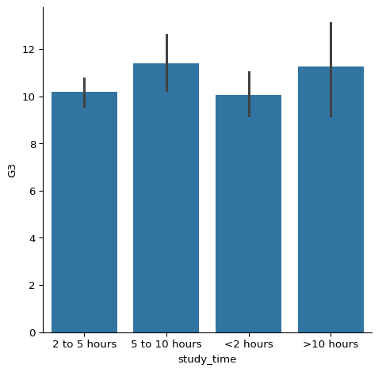
- Utilizando el parámetro
ordery la listacategory_orderque se proporciona, reorganiza las barras para que estén en orden de menor tiempo de estudio a mayor.
# List of categories from lowest to highest
category_order = ['<2 hours',
'2 to 5 hours',
'5 to 10 hours',
'>10 hours']
# Rearrange the categories
sns.catplot(x='study_time', y='G3',
data=student_data,
kind='bar',
order=category_order)
# Show plot
plt.show()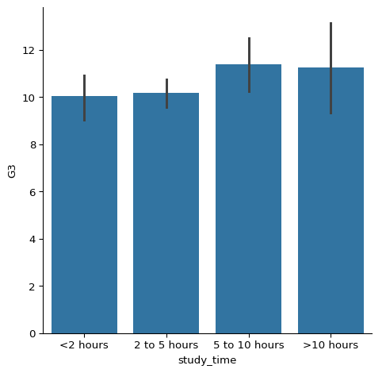
- Actualiza el gráfico para que ya no muestre los intervalos de confianza.
# List of categories from lowest to highest
category_order = ['<2 hours',
'2 to 5 hours',
'5 to 10 hours',
'>10 hours']
# Rearrange the categories
sns.catplot(x='study_time', y='G3',
data=student_data,
kind='bar',
order=category_order,
errorbar=None) # ci=None deprecated
# Show plot
plt.show()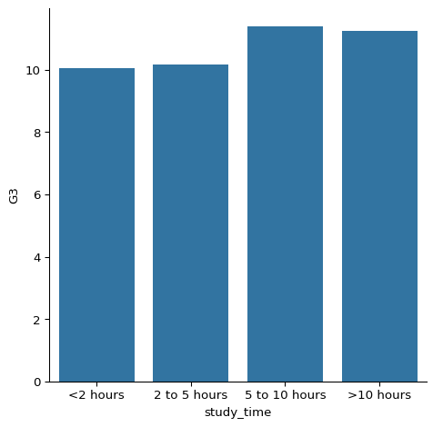
Los estudiantes en nuestra muestra que estudiaron más tienen un promedio de calificaciones ligeramente más alto, pero no es una relación fuerte.
Diagramas de caja
- ¿Qué es un diagrama de caja?
- Muestra la distribución de datos cuantitativos.
- Se puede ver la mediana, la dispersión, la asimetría y los datos atípicos.
- Facilita la comparación entre grupos.

- Cómo crear un diagrama de caja en Seaborn
import matplotlib.pyplot as plt
import seaborn as sns
g = sns.catplot(x='time', y='total_bill',
data=tips,
kind='box')
plt.show()
- Cambiar el orden de las categorías
import matplotlib.pyplot as plt
import seaborn as sns
g = sns.catplot(x='time', y='total_bill',
data=tips,
kind='box',
order=['Dinner',
'Lunch'])
plt.show()
- Omitir los valores atípicos usando
sym
import matplotlib.pyplot as plt
import seaborn as sns
g = sns.catplot(x='time', y='total_bill',
data=tips,
kind='box',
sym='')
plt.show()
- Cambiando los bigotes usando
whis- Por defecto, los bigotes se extienden a 1.5 * el rango intercuartil.
- Puede ser extendido a 2.0 * IQR:
whis=2.0 - Muestra los percentiles 5 y 95:
whis=[5, 95] - Muestra los valores mínimo y máximo:
whis=[0, 100]
import matplotlib.pyplot as plt
import seaborn as sns
g = sns.catplot(x='time', y='total_bill',
data=tips,
kind='box',
whis=[0, 100])
plt.show()
Crea e interpreta un diagrama de cajas
Sigamos utilizando el conjunto de datos student_data. En un ejercicio anterior, exploramos la realción entre el estudio y la nota final utlizando un digrama de barras para comparar la nota final media ("G3") entre los estudiantes de diferentes categorías de "study_time".
En este ejercicio, intentaremos utilizar un diagrama de cajas para ver esta relación. Como recordatorio, para crear un gráfico de caja tendrás que utilizar la función catplot() y especificar el nombre de la variable categórica a poner en el eje x (x=____), el nombre de la variable cuantitativa a resumir en el eje y (y=____), el DataFrme de pandas a utilizar (data=____), y el timpo de gráfico (kind="box").
Instrucciones
- Utiliza
sns.catplot(), y el DataFramestudent_datapara crear un gráfico de caja con"study_time"en el eje x y"G3"en el eje y. Establece el orden de las categorías enstudy_time_order.
# Specify the category ordering
study_time_order = ['<2 hours', '2 to 5 hours',
'5 to 10 hours', '>10 hours']
# Create a box plot and set the order of the categories
sns.catplot(x='study_time', y='G3',
data=student_data,
kind='box',
order=study_time_order)
# Show plot
plt.show()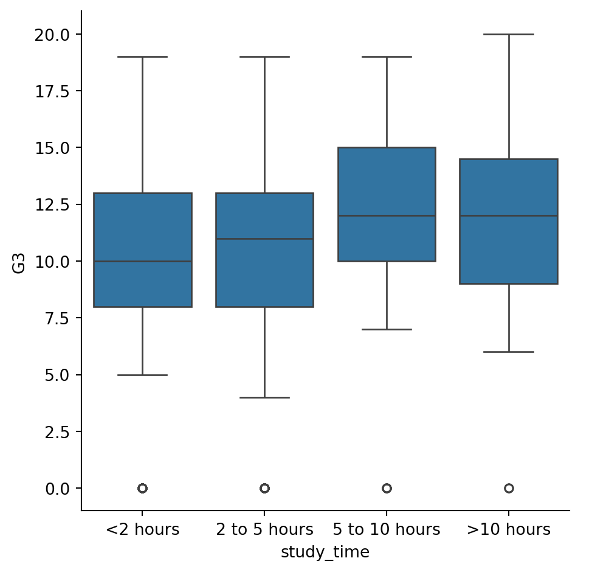
- Pregunta ¿ Cuál de las siguientes es una interpretación correcta de este diagrama de caja?
Respuestas Posibles
La línea del medio de cada caja representa la mediana.
Omitir valores atípicos
Ahora vamos a utilizar el conjunto de datos student_data para ocmparar la distribución de las calificaciones finales ("G3") entre los estudiantes que tienen acceso a internet en casa y los que no. Para ello, utilizaremos la variable `“internet”, que es un indicador binario (si/no) de si un alumno tiene acceso a internet en casa.
Dado que internet puede ser menos accesible en las zonas rurales, añadiremos subgrupos en función de dónde viva el alumno. Pra ello, podemos utilizar la varible "location", que es un indicador de su un estudiante vive en una localidad urbana (“Urban”) o rural (“Rural”).
Como recordatorio, puedes omitir los valores atípicos en los gráficos de caja estableciendo el parámetro sym iguan a una cadena vacía ("").
Instrucciones
- Utiliza
sns.catplot()para crear un gráfico de caja con el DataFramestudent_data, poniendointerneten el eje x y"G3"en el eje y.
# Create a box plot with subgroups and omit the outliers
sns.catplot(x='internet', y='G3',
data=student_data,
kind='box',
col='location',
hue='location',
showfliers=False)
# Show plot
plt.show()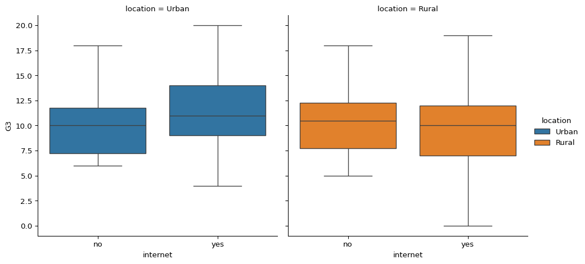
Las calificaciones medianas son bastante similares entre cada grupo, pero la dispersión de la distribución parece mayor entre los estudiantes que tienen acceso a internet.
Ajustar los bigotes
En la lección vimos que múltiples formas de definir los bigotes en un diagrama de caja. En esta serie de ejercicios, seguiermos utilizando el conjunto de datos student_data para comparar la distribución de las calificaciones finales ("G3") entre los estudiantes que mantienen un relación romántica y los que no. Utilizaremos la variable "romantic", que es un indicador si/no de si el alumno tiene una relación romántica.
Vamos a crear un diagrama de cajas para ver esta relación y probar distintas formas de definir los bigotes.
Instrucciones
- Ajusta el código para que los bigotes del diagrama de caja se extiendan hata 0,5 * IQR. Recuerda: el IQR es el rango intercuartílico.
# Set the whiskers to 0.5 * IQR
sns.catplot(x='romantic', y='G3',
data=student_data,
kind='box',
whis=0.5)
# Show plot
plt.show()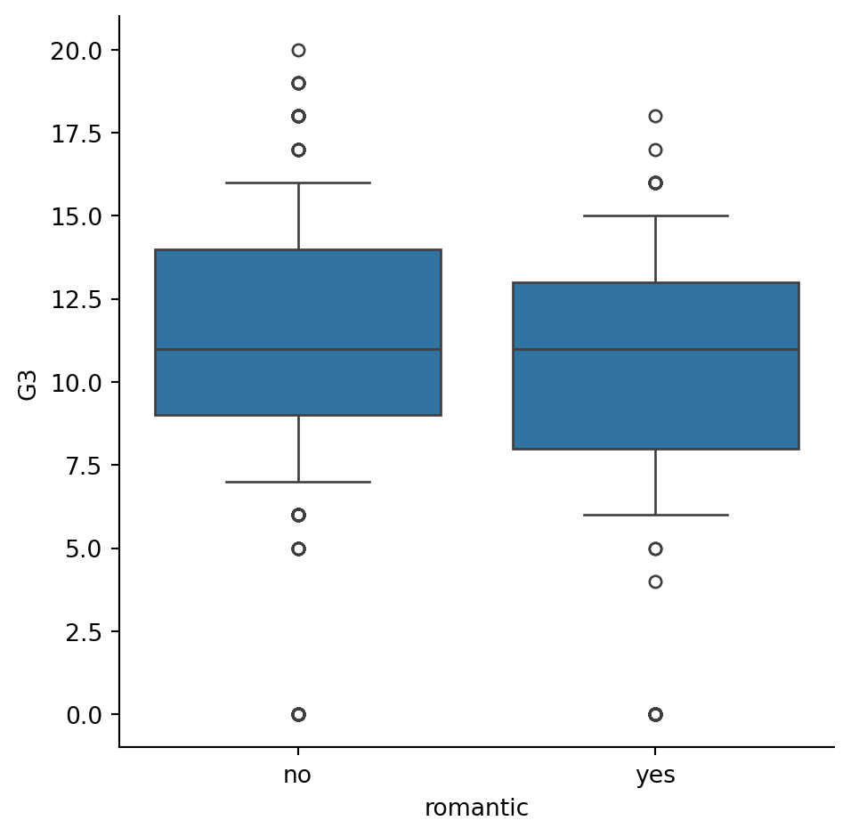
- Cambia el código para que los bigotes se extiendan hasta los percentiles 5 y 95
# Extend the whiskers to the 5th and 95th percentile
sns.catplot(x='romantic', y='G3',
data=student_data,
kind='box',
whis=[5, 95])
# Show plot
plt.show()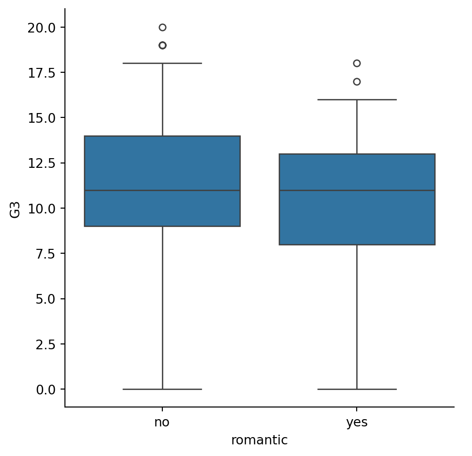
- Cambia el código para que los bigotes se extiendan hsta los valores mínimo y máximo.
# Set the wiskers at the min and max values
sns.catplot(x='romantic', y='G3',
data=student_data,
kind='box',
whis=[0, 100])
# Show plot
plt.show()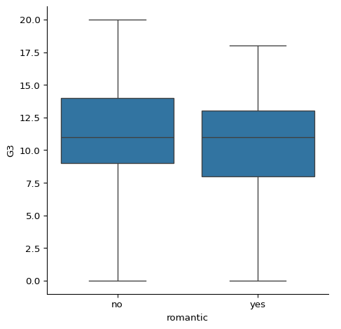
La nota media es la misma entre estos dos grupos, pero la nota máxima es más alta entre los estudiantes que no están en una relación romántica.
Gráfico de puntos
- ¿Qué son los gráficos de puntos?
- Los puntos muestran la media de una variable cuantitativa.
- Las líneas verticales muestran los intervalos de confianza del 95%.
- Gráficos de puntos vs Gráficos de líneas
- Ambos muestran:
- La media de una variable cuantitativa.
- Los intervalos de confianza del 95% para la media
- Diferencias:
- Los gráficos de línea tienen variables cuantitativas (usualmente tiempo) en el eje x.
- Los gráficos de puntos son variables categóricas en el eje x.
- Ambos muestran:
- Gráficos de puntos vs Gráficos de barras
- Ambos muestran:
- La media de una variable cuantitativa.
- Los intervalos de confianza del 95% para la media
- Ambos muestran:
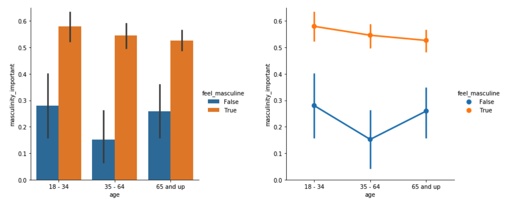
- Crear un Gráfico de puntos
import matplotlib.pyplot as plt
import seaborn as sns
sns.catplot(x='age', y='masculinity_important',
data=masculinity_data,
kind='point',
hue='feel_masculine')
plt.show()
- Desconectando los puntos
import matplotlib.pyplot as plt
import seaborn as sns
sns.catplot(x='age', y='masculinity_important',
data=masculinity_data,
kind='point',
hue='feel_masculine',
join=False)
plt.show()
- Desplegando la mediana
import matplotlib.pyplot as plt
import seaborn as sns
from numpy import median
sns.catplot(x='smoker', y='total_bill',
data=tips,
kind='point',
estimator=median)
plt.show()
- Personalizar los intervalos de confianza
import matplotlib.pyplot as plt
import seaborn as sns
sns.catplot(x='smoker', y='total_bill',
data=tips,
kind='point',
capsize=0.2)
plt.show()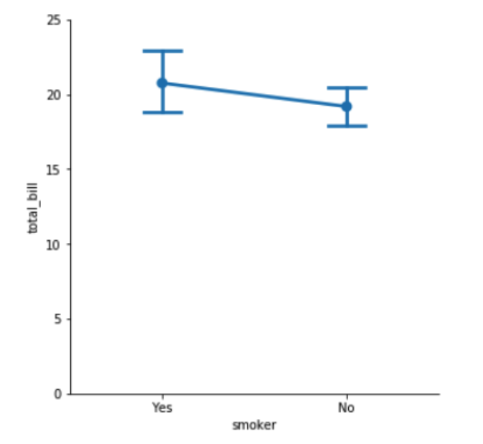
- Desactivar los intervalos de confianza
import matplotlib.pyplot as plt
import seaborn as sns
sns.catplot(x='smoker', y='total_bill',
data=tips,
kind='point',
ci=None)
plt.show()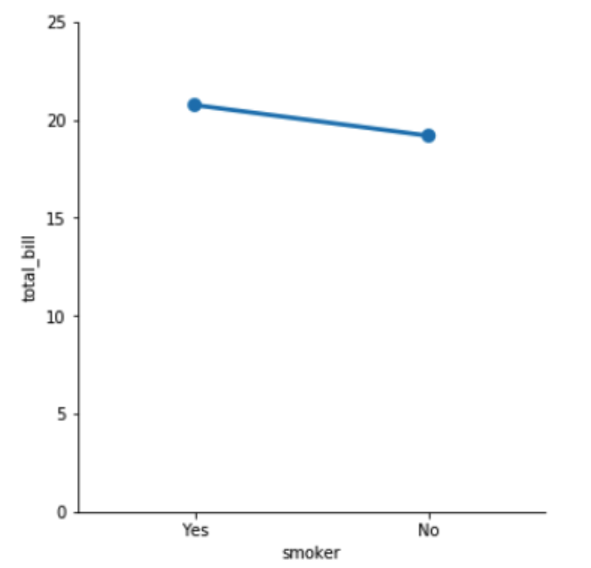
Personalizar los gráficos de puntos
Sigamos examinando datos de alumnos de secundaria, esta vez utilizando un gráfico de puntos para responder a la pregunta: ¿Influye la calidad de la realción familiar del alumno en el número de faltas que tiene en la escuela? Aquí utilizaremos la variable "famrel", que describe la calidad de la relación familiar de un alumno de 1 (muy mala) a 5 (muy buena).
Como recordatorio, para crear un gráfico de puntos, utiliza la función catplot() y especifica el nombre de la variable categórica a poner en el eje x (x=____), el nombre de la variable cuantitativa a resumir en el eje y (y=____), el DataFrame de pandas a utilizar (data=____), y el tipo de gráfico categórico (kind="point").
Instrucciones
- Utiliza
sns.catplot()y el DataFramestudent_datapara crear un gráfico de puntos con"famrel"en el eje x y el número de ausencias ("absences") en el eje y.
# Create a point plot of family relationship vs. absences
sns.catplot(x='famrel', y='absences',
data=student_data,
kind='point')
# Show plot
plt.show()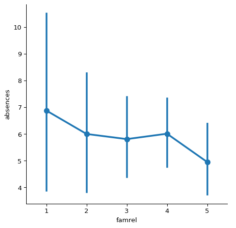
- Añade “mayúsculas” al final de los intervalos de confianza con el tamaño
0.2.
# Add caps to the cofidence interval
sns.catplot(x='famrel', y='absences',
data=student_data,
kind='point',
capsize=0.2)
# Show plot
plt.show()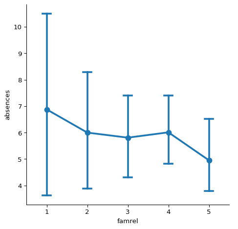
- Elimina las líneas que unen los puntos de cada categoría.
# Remove the lines joining the points
sns.catplot(x='famrel', y='absences',
data=student_data,
kind='point',
capsize=0.2,
linestyle='none') # deprecated join=False
# Show plot
plt.show()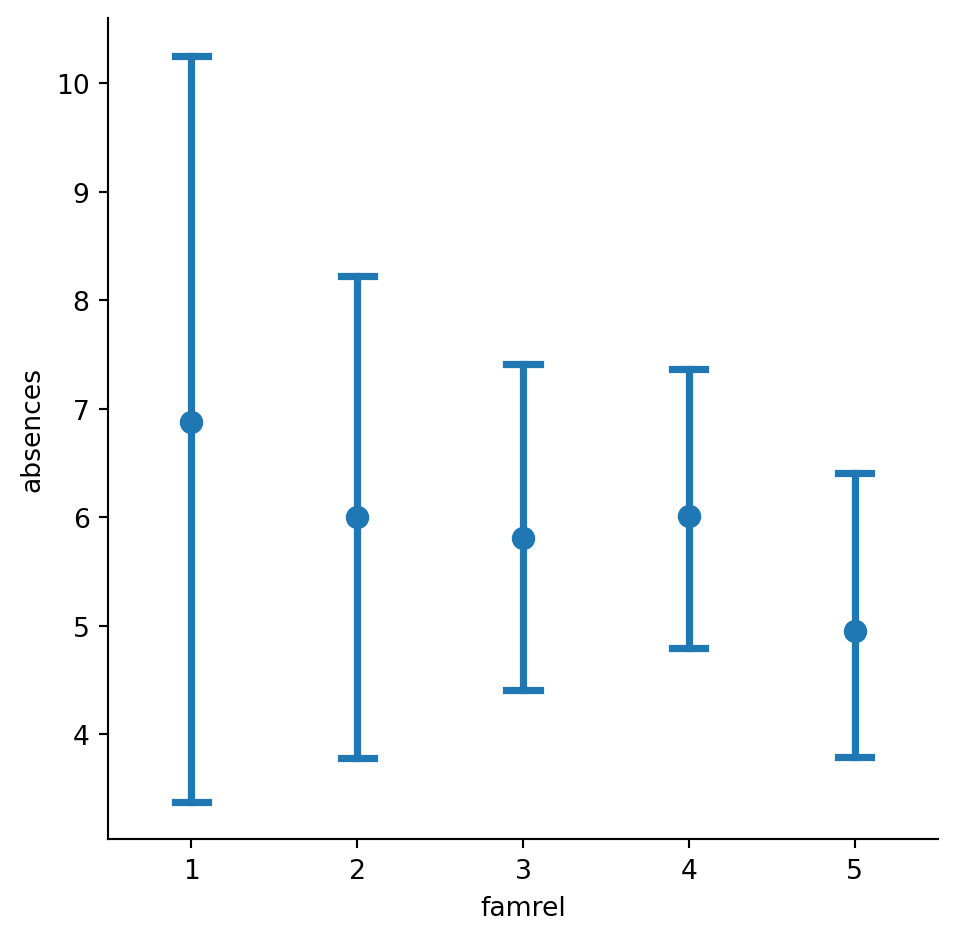
Aunque el número promedio de ausencias es ligeramente menor entre los estudiantes con relaciones familiares de mayor calidad, los grandes intervalos de confianza nos dicen que no podemos estar seguros de que haya una asociación real aquí.
Gráficos de punto con subgrupos
Sigamos explorando el conjunto de datos de los alumnos de secundaria. Esta vez, formularemos la pregunta: ¿estar en una relación romántica está asociado a una mayor o menor asistencia a la escuela? ¿Y difiere esta asociación en función de la escuela a la que asisten los alumnos? Averigüémoslo mediante un gráfico de puntos.
Instrucciones
- Utiliza
sns.catplot()y el DataFramestudent_datapara crear un gráfico de puntos con el estado de la relación ("romantic") en el eje x y el número de ausencias ("absences") en el eje y. Colorea los puntos según la escuela a la que asistan ("school").
# Create a point plot that uses color to create subgroups
sns.catplot(x='romantic', y='absences',
data=student_data,
kind='point',
hue='school')
# Show plot
plt.show()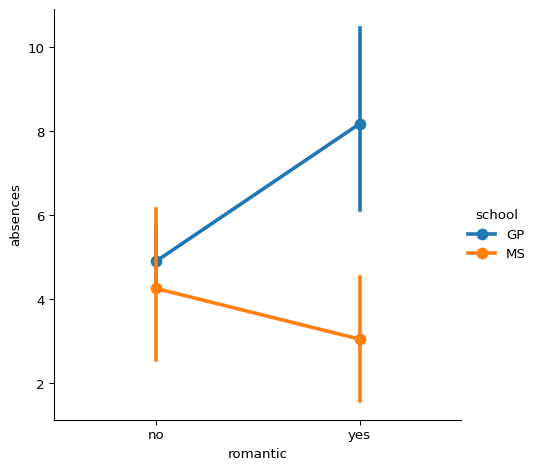
- Desactiva los intervalos de confianza del gráfico.
# Turn off the confidence intervals for this plot
sns.catplot(x='romantic', y='absences',
data=student_data,
kind='point',
hue='school',
errorbar=None) # deprecated ci=None)
# Show plot
plt.show()
- Como puede haber valores atípicos de alumnos con muchas ausencias, utiliza la función
medianque hemos importado denumpypara mostar la mediana de número de ausencias en lugar de la media.
# Import median function from numpy
from numpy import median
# Plot the median number of absences instead of the mean
sns.catplot(x='romantic', y='absences',
data=student_data,
kind='point',
hue='school',
errorbar=None,
estimator=median)
# Show plot
plt.show()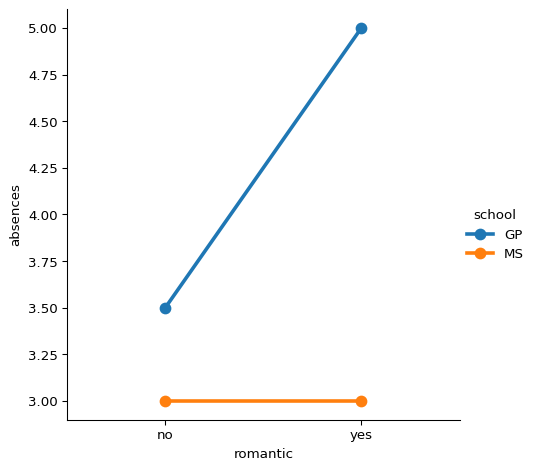
Parece que los estudiantes en relaciones románticas tienen un promedio y una mediana más altos de ausencias en la escuela GP, pero esta asociación no se mantiene en la escuela MS.